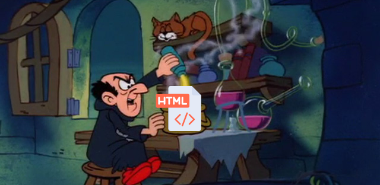

>Why you should write a website

Back in the day everyone had their own website and nowadays I just can't say how much I love browsing these old time capsules containing various experiences and knowledge, each with it's unique charm and style of the owner. Some are just simple plain text on a white background, others use a lot of colours, gifs and all kinds of wacky images to make it livelier. The best part is that they are all fine! Not everything needs hundreds gifs or images what matters is expressing yourself and getting your point across! Having your little corner on the Internet where you can do what you want is extremely fun and is like writing your own diary that you can browse through at anytime and recall all memories related to your daily life, art, projects or whatever you posted on there. What is sad, however, is that we are switching over to social media like Instagram, Twitter or Tumblr throwing away the need for that diary. If we look at social media state today, there is barely any forms of customizing your profile page compared to having your own website. For instance, the most you can do on Twitter ~~ a different avatar, banner, bio AND THAT'S IT! NOTHING MORE! Every profile has the same palletes, same browsing options, same icons. If it wasn't for the profile pictures I doubt we could differentiate users apart from looking at their posts. Of course, there are some services that offer full customization of your profile like SpaceHey, but you still could get more freedom by setting up your own website. Your only limit would be your creativity. Moreover, you can make it easier to access what is important about you for others and not limit it to a mere one pinned message. There is so much more you don't have to worry about: word limits, advertisements, cookie tracking, bullshit decisions made by CEOs and so on. Writing a website may seem intimidating at first, due to When it comes to doing so, you can first try with free hosters like Neocities or Github Pages. Both are easy to setup. Each option has its pros and cons. For example, on Neocities your site can be found by others easier due to the search available there, but you can upload only certain file formats unlike on Github, where you can upload anything as long as it does not surpass the file size limit, which is 1GB. https://www.w3schools.com/html/default.asp https://developer.mozilla.org/en-US/docs/Web